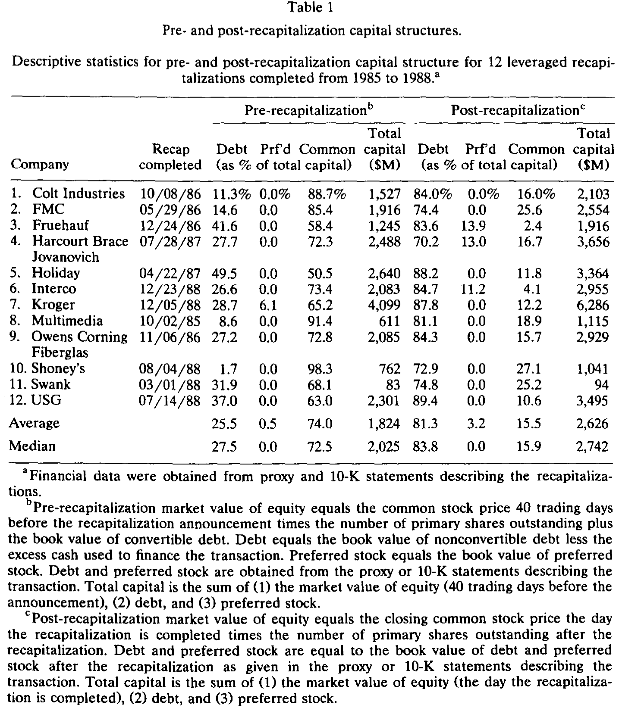
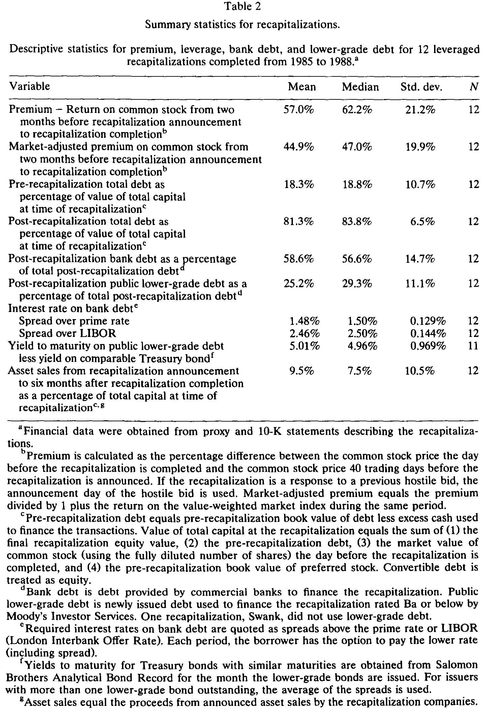
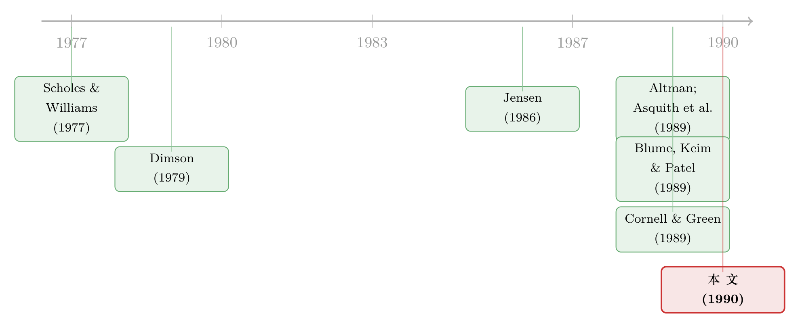

他们借了九成的债，可股票却几乎没变得更危险
本文读的是 Kaplan & Stein (1990, JFE)：当一家公司在「杠杆资本重组」里把负债从总资本的 25.5% 一口气推高到 81.3%，按理说留下来的那一小块股权（stub equity）应该「危险得发疯」。可作者发现，股权的系统性风险只上升了 37%–57%——小得出奇。这点反常恰恰被他们「反过来用」：既然增加的那么多杠杆没有把风险压给股东，那它一定压给了债权人。由此隐式地倒推出，这些高杠杆交易里全部债务的 beta 平均高达 0.65（甚至在另一种假设下是 0.40）——远高于人们以为的「债券嘛，没什么系统性风险」。
1 引言：一笔没人能直接称重的债
1980 年代末，华尔街被一种东西迷住了，又被同一种东西吓住了——杠杆收购 (leveraged buyout, LBO) 和杠杆资本重组 (leveraged recapitalization) 里那堆「垃圾债 (junk debt)」。投资者、政客、学者都在追问同一个问题：这些债，到底有多险？
这个问题听上去简单，做起来却要命。你想知道一只债券的系统性风险，最自然的办法当然是把它的价格序列拉出来，对市场组合做个回归，量出 beta。可垃圾债市场出了名的不流动——成交稀稀拉拉，报价常常是交易商「拍脑袋」给的。Blume, Keim, and Patel (1989) 用报价数据算出低等级债券的 beta 只有 0.25（1982–1987）。但作者一针见血地指出：如果报价不能及时、充分地反映「真实」市值，那么用报价估出来的 beta 会被系统性地向下压低——价格僵在原地不动，自然显得风险很低。
更糟的是,还有一大块债根本就没有价格:银行贷款。LBO 里超过一半的钱来自商业银行,而银行贷款的二级市场价格数据,在当时几乎是不存在的。
于是问题摆在这里:一笔你既测不准、又有一半压根看不见价格的债,该怎么称重?
2 一个巧妙的「绕道」:从股票里读出债券的风险
Kaplan 和 Stein 的答案,是不去碰那些脏兮兮的债券价格,而是绕一个大弯——从股票里把债券的风险「读」出来。
这一步靠的是金融学里一条最朴素的恒等式:系统性风险守恒。一家公司的资产 beta,等于它股权 beta 与债务 beta 按市值加权的平均。资产不变,这个加权平均就不变;你往资本结构里灌再多债,无非是在股东和债主之间重新分配同一份风险而已。
这就是为什么作者偏偏选了「公开杠杆资本重组」这个样本,而不是普通 LBO。普通 LBO 把股票全买走、退市了,你就再也看不到股价。而 recap 不一样:公司只是借一大笔钱、给股东派一笔巨额一次性股利,股东留着股票——那块缩水后仍在交易的「残股 (stub equity)」,正是作者需要的那把尺子。
不妨跟着作者的那个经典小例子走一遍。设 XYZ 公司原本全股权融资,市值 $100,股权 beta 为 1。现在它借 $85、派 $85 股利。没有税、没有别的好处,公司总市值还是 $100,于是 stub equity 只值 $15。
接着,一个自然的问题是:如果这 $85 的债毫无系统性风险,那么原来由 $100 资产承担的全部风险,现在要压缩到 $15 的股权上——stub 的 beta 应该是 1 / 0.15 = 6.67。
然后,真正关键的一步来了:我们去实测这块 stub 的 beta。假设量出来只有 2.22,也就是 6.67 的三分之一。这意味着什么?意味着剩下三分之二的公司风险,根本没落到股东头上——它被债主接走了。于是债的「隐含 beta (implied beta)」就是:缺失的那 0.67 资产 beta,除以 0.85 的债务占比,等于 0.78。
绕开了债券价格,我们照样把债的风险称出来了。这,就是全文的灵魂。
3 数据:十二家「脱胎换骨」的公司
作者从两个来源(Securities Data Company 的并购库 + Salomon Brothers Stub Index)起手,拿到 31 家公司,再层层筛选:剔除重组后不公开交易的、重组前没有公开股权的、1989 年才完成(股价样本不够算 beta 的)、以及重组后负债占比不到 60% 的。最后剩下 12 家——Colt、FMC、Fruehauf、Holiday、Kroger、USG 等等,全部完成于 1985–1988 年。
表 1 把这场「脱胎换骨」讲得很清楚:重组前,这些公司一点都不算高杠杆,负债平均只占总资本的 25.5%;重组后,负债占比平均冲到 81.3%。这个杠杆水平,只比 Kaplan (1989b) 那批管理层收购样本的 85.6% 略低一点——换句话说,这些 recap 在财务结构上几乎就是 LBO 的翻版。

Table 1
表 2 则补上了交易的另外几个侧面:股东拿到的溢价高得惊人——从公告前 40 个交易日到重组完成,普通股回报平均 57.0%,经市场调整后仍有 44.9%。重组后的债里,58.6% 是新增银行贷款,25.2% 是新发的低等级次级债。银行贷款利率大约在 T-bill 之上 3.25%,低等级债的承诺到期收益率则比同期限国债高 5.01%。当然,因为有违约风险,预期回报必然低于这些承诺回报。

Table 2
记住这两个数字的反差:负债占比从 25.5% 跳到 81.3%,杠杆翻了好几倍。带着它,我们去看股票那边发生了什么。
4 方法:把「守恒」写成方程
这一节我们把上面那个直觉,一步步写成作者真正用的方程。
第一步,估股权 beta。 用市场模型,把个股日收益对 CRSP 价值加权指数回归:
$$R_{i,t} = a_i + \beta_i^E R_{m,t} + \varepsilon_{i,t}$$
重组前的 \(\beta_E^o\),取公告前第 165 到第 40 个交易日的窗口;重组后的 \(\beta_E^n\),取完成后第 3 到第 128 个交易日的窗口(下标 \(o\) = old,\(n\) = new)。
第二步,反推重组前的资产 beta。 资产风险是股与债的加权平均:
$$\beta_{A0} = \beta_E^o\,\frac{E_o}{E_o+D_o} + \beta_D^o\,\frac{D_o}{E_o+D_o}$$
这里要给「旧债的 beta」\(\beta_D^o\) 一个假设。作者取 0.15——大致等于样本期国债的 beta。(如果这个值取高了,后面估出的债务 beta 会被高估;作者也报告了 \(\beta_D^o = 0\) 的极端情形。)
第三步,这是整个方法的枢纽——「资产 beta 不变」假设。 既然重组没有改变公司的真实资产,那么重组后的资产 beta 应当还等于 \(\beta_{A0}\):
$$\beta_A = \beta_E^n\,\frac{E_n}{E_n+D_n} + \beta_D^n\,\frac{D_n}{E_n+D_n}$$
把它对 \(\beta_D^n\) 解出来,就得到了那个隐含债务 beta。这是全文最核心的一个式子:
读懂这个式子,就读懂了为什么作者的方法会产出高债务 beta:右边第一项 \(\beta_A\) 是固定的(资产风险守恒),如果实测的股权 beta \(\beta_E^n\) 上升得很少,那第二项就扣不掉多少,剩给债务的 \(\beta_D^n\) 自然就大。
那如果资产 beta 并非守恒呢? 这是作者诚实留下的第二种情形。如果重组真的像 Kaplan (1989a, b)、Schipper and Smith (1988) 暗示的那样,带来了运营成本和税负的下降,而这些下降又主要是固定成本的削减,那么资产 beta 会下降(关于「现金流必须吐出来、固定义务必须削减」这条逻辑,正是 Jensen (1986) 自由现金流假说的延伸,可参见《现金为什么一定要『还』出去?——四十年后,重读 Jensen 的自由现金流》)。
作者于是设了一个「降低资产 beta」的极端情形:假设整笔经市场调整的溢价,全部来自固定成本的削减。这等价于:
$$\beta_A^{n\prime} = \beta_A\,\frac{E_n + D_o + Mkt_n}{E_n + D_n}$$
其中 \(Mkt_n\) 是 \(E_n\) 乘以价值加权指数在那段时间的回报(市场调整项)。把 \(\beta_A^{n\prime}\) 代回上面的隐含 beta 公式,就得到第二套、更低的债务 beta 估计。两种情形之间的差距,正好量出了「我们对资产 beta 变化的假设」有多重要——这是作者反复强调、绝不藏着掖着的一点。
5 主要结果:小得反常的股权 beta,高得反常的债务 beta
现在把数据塞进方程。
第一个、也是最反直觉的发现:股权 beta 上升得出奇地少。 用日收益的市场模型,平均股权 beta 从重组前的 1.01 升到重组后的 1.38;用 Scholes-Williams 法(专门校正非同步交易,见 Scholes and Williams, 1977)是 1.00 → 1.57;用周收益是 1.04 → 1.47。涨幅落在 37% 到 57% 之间。
想想看:负债占比从 25.5% 飙到 81.3%,杠杆翻了三四倍,股权 beta 却只涨了三五成?按守恒恒等式,这点涨幅根本「装不下」新增的全部杠杆。于是反转出现——那缺失的风险,必然落在了债权人身上。
- 在资产 beta 不变的情形下,12 笔交易里全部债务(银行债 + 次级债合计)的隐含 beta 平均为
0.65(标准误0.06)。若进一步假设次级低等级债的 beta 是银行债的两倍,则低等级债的 beta 平均0.89。 - 在资产 beta 降低的情形下,全部债务的隐含 beta 平均降到
0.40(标准误0.05),低等级债为0.54。
无论哪种假设,这都是一个让人意外的数字。要知道,Blume, Keim, and Patel (1989) 用报价数据估出的低等级债 beta 不过 0.20–0.25。作者的隐含法说:别被那些僵住的报价骗了,这些债承担的系统性风险,可能比你以为的高得多。
最后,作者做了一件很负责任的事:用 Morgan Stanley 提供的债券价格,对同一批低等级债做了一次直接估计作为对照。结果这些债的 beta「至多 0.41」——和 Cornell and Green (1989) 的 0.36 接轨,落在隐含法区间的下端。两套方法没有打架,只是隐含法提醒我们,真实值很可能偏向区间的上半段。
6 文献脉络:从「数违约」到「读股价」
这条研究线,是被一连串问题逼出来的。
最早,人们关心的是垃圾债到底会不会违约。Altman (1989) 和 Asquith, Mullins, and Wolff (1989) 把 1977–1986 年发行的低等级债拉出来,做了 ex post 的违约率「老化分析」,发现累计违约率相对投资级高得吓人。Blume and Keim (1989) 更进一步,把实际违约经验算进去,得出 1977–1978 那批债的已实现回报是 8.52%,只比国债高约 1%。
接着,一个自然的问题是: 已实现回报只是「一次抽签」,违约率也只是风险的一种。投资者真正该被补偿的,是事前的系统性风险。于是 Blume, Keim, and Patel (1989) 用报价直接估 beta,Cornell and Green (1989) 改用低等级债基金的净值来估(beta 0.36),试图绕开报价不动的问题。

但真正关键的一步在于换一个视角。 前人都在债券这一侧死磕价格,而 Kaplan 和 Stein 把问题翻了过来——既然债券价格不可信、银行贷款根本没价格,那就别从债这边量,从股权 beta 的变化这边倒推。这一招还借了几样现成的工具:Scholes and Williams (1977) 校正非同步交易的 beta 估计、Kaplan (1989a, b) 对管理层收购运营改善的证据、以及 Healy and Palepu (1990) 关于「增发新股后资产 beta 会上升」的发现(作者用它的反面来论证 recap 可能压低资产 beta)。整篇文章,正坐落在「公司金融 + 资产定价 + 公司债」这三条线的交叉点上。
(关于高杠杆交易在组织层面的后果,可参见《同样借到 90% 的债,为什么一家公司「脱胎换骨」,另一家只是「勒紧裤腰」?》;关于这套 LBO 结构能撑多久,可参见《LBO 到底是「速战速决」还是「从此私有」?》。而这篇 1990 年的论文所追问的「债务 beta」,三十多年后又以「公司债收益里 beta 还是特征说了算」的形式重新被讨论,见《贝塔还是特征?——公司债收益里那场被忽略的「站队」》。)
7 评论与延伸(Q&A + 研究方向)
(a) 几个可能的疑问
Q:这套「隐含 beta」法,凭什么比直接用债券价格估更可信?
它的好处不是「更精确」,而是「避开了一个已知的偏差」。债券报价若不能及时反映真实市值,直接估出的 beta 会被向下压低;而股权 beta 来自流动性好得多的股票市场,再借「风险守恒」把债的 beta 倒推出来,就绕开了这个偏差。代价是引入了别的假设(资产 beta 是否守恒、旧债 beta 取多少),所以作者老老实实给的是一个区间,而非一个「最佳」点估计。
Q:为什么不用普通 LBO,偏要用公开资本重组这种少见的样本?
因为方法的命门是「重组后还得有股价」。普通 LBO 把股票全买走、公司退市,股权 beta 就无从估起。Recap 保留了在交易的 stub equity,等于在一个准 LBO 的资本结构上留了一扇观察窗。代价是样本极小——只有 12 家。
Q:股权 beta 只升 37%–57%,会不会只是因为 beta 没估准、被低估了?
这是最该担心的点,但作者做了几道防线:日收益、周收益、Scholes-Williams 三种估法都指向同样「偏小」的上升;而 Scholes-Williams 本就是为校正非同步交易、防止 beta 被低估而设计的,它给出的 post-beta 反而最高(1.57)。换句话说,即便往「把 beta 往大了估」的方向努力,股权风险的上升幅度依然显得不足以装下新增杠杆。
Q:「资产 beta 守恒」这个假设靠谱吗?
不一定守恒,作者自己也知道,所以才并排给了「降低资产 beta」的另一极端。两种假设把债务 beta 框在
0.40–0.65之间。真相多半在中间。这正是文章诚实的地方:它不卖一个唯一的数字,而是把结论对假设的敏感性摊开给你看。
Q:为什么要把「次级债 beta = 银行债 beta 的两倍」这种武断假设也写进去?
因为隐含法只能算出全部债务的平均 beta,天然无法区分优先银行债和次级垃圾债各自的风险。那个 2:1 的比例纯属示例性的拆分,目的是给低等级债一个粗略的量级(0.54–0.89),而不是一个可信的点估计。这是方法的固有局限,不是疏忽。
Q:这个结论对垃圾债投资者意味着什么?
意味着「垃圾债波动率低、beta 低、所以是免费午餐」的故事要打个折扣。僵住的报价让这些债看起来风险很低;一旦用隐含法把真实的系统性风险量出来,它们承担的风险可能远高于报价 beta 所显示的——投资者要求的回报,理应反映这一点。
(b) 几个可能的研究问题与提案
1. 把隐含 beta 法搬到现代私募信贷 / 直接贷款市场
【经济故事】今天的高杠杆交易,债务越来越多由私募信贷基金、直接贷款人提供,价格同样不透明、甚至按季度才有一次估值——这和 1990 年银行贷款「没有价格」的处境惊人地相似。Kaplan-Stein 的隐含法天然适合这种「债看不见、但发行人或其同类有股价」的场景。 【可行性】中。需要找到「债务结构剧变、但股权仍可观测」的事件(如杠杆分红 recap、上市公司的大额举债回购),数据可从 Pitchbook / Refinitiv LPC 取得。识别上的难点和原文一样:资产 beta 是否守恒。可行,但样本和原文一样会偏小。
2. 用隐含法给银行贷款的系统性风险定价
【经济故事】原文一个被低估的卖点是:它能给「根本没有价格」的银行债估风险。如今银团贷款的二级市场(LSTA 报价)已相对成熟,可以把「隐含 beta」与「贷款二级市场价格直接估的 beta」做一次正面对照,检验报价到底把风险压低了多少。 【可行性】高。LSTA / Markit 有银团贷款报价,发行人股价可得。这是一个干净的「两种方法对账」设计,识别风险小,doable。
3. 资产 beta 到底变没变?用运营数据把第二种假设证伪或证实
【经济故事】原文把「资产 beta 守恒 vs. 降低」当成两个外生假设并排摆着,但没有去检验哪一个更接近真相。如果能直接观测重组前后固定成本、经营杠杆的变化,就能把那条假设从「猜」变成「测」,从而把债务 beta 的区间收窄。 【可行性】中。需要 Compustat 上重组前后若干年的成本结构数据,用经营杠杆(固定/变动成本拆分)来推断资产 beta 的方向。难点在固定成本的识别,但有现成的会计度量可用。
4. 外资持有人对高杠杆债务定价的影响
【经济故事】高收益债和杠杆贷款里,外资(尤其是 CLO、跨境基金)的占比近二十年大幅上升。这些持有人是否在系统性风险的定价上和本土投资者不同?这关系到「外资究竟是稳定器还是放大器」的老争论。 【可行性】中偏低。需要债券层面的持有人国别数据(如 eMAXX、Morningstar 持仓),与隐含 beta 估计拼接,识别上要处理持有人选择的内生性,doable 但工程量大。
8 我的判断
这篇 1990 年的论文,最漂亮的地方不在结论,而在问问题的角度。当所有人都在债券那一侧和不可靠的价格搏斗时,作者反手从股权 beta 的微小变化里,把债券和银行贷款的风险一起「读」了出来——一个测不准、一个根本没价格的东西,被同一把尺子量了出来。这是方法论上真正的贡献。
要说担心,核心识别全压在「资产 beta 守恒」这一条上。作者很诚实地把它和「资产 beta 降低」并排呈现,但两个都是假设而非检验——文章没能用独立的运营数据去判定真相落在区间的哪一端,于是 0.40 到 0.65 这个区间,宽得让人有点不踏实。再加上 12 家公司的样本、0.06 量级的标准误,统计上的说服力是有限的;它更像一次有说服力的「数量级论证」,而非精确测量。
我想看到的后续,其实就是上面第 2、3 两个方向:一是趁今天银团贷款有了报价,把隐含 beta 和直接估的 beta 做一次正面对账,看看「报价压低风险」这个 1990 年的猜想到底有多大;二是用运营数据把那条守恒假设钉死,让债务 beta 的区间真正收窄。三十多年过去,「高杠杆里的债到底有多险」依然是个活的问题——而 Kaplan 和 Stein 那个「从股票读债券」的把戏,至今没有过时。
参考文献
Altman, Edward, 1989. Measuring corporate bond mortality and performance. Journal of Finance 44(2), 909–922.
Asquith, Paul, David Mullins, and Eric Wolff, 1989. Original issue high yield bonds: Aging analyses of defaults, exchanges and calls. Journal of Finance 44(4), 923–952.
Blume, Marshall, and Donald Keim, 1989. Realized returns and defaults on lower-grade bonds: The cohort of 1977 and 1978. Working paper, The Wharton School.
Blume, Marshall, Donald Keim, and Sandeep Patel, 1989. The components of lower-grade bond price variability. Working paper, The Wharton School.
Cornell, Bradford, and Kevin Green, 1989. The investment performance of low-grade bond funds. Working paper, University of California, Los Angeles.
Dimson, Elroy, 1979. Risk measurement when shares are subject to infrequent trading. Journal of Financial Economics 7(2), 197–226.
Healy, Paul, and Krishna Palepu, 1990. Earnings and risk changes surrounding primary stock offers. Journal of Accounting Research 28(1), 25–48.
Jensen, Michael, 1986. Agency costs of free cash flow, corporate finance and takeovers. American Economic Review 76(2), 323–329.
Kaplan, Steven, 1989a. Management buyouts: Evidence on taxes as a source of value. Journal of Finance 44(3), 611–632.
Kaplan, Steven, 1989b. The effects of management buyouts on operations and value. Journal of Financial Economics 24(2), 217–254.
Kaplan, Steven N., and Jeremy C. Stein, 1990. How risky is the debt in highly leveraged transactions? Journal of Financial Economics 27(1), 215–245.
Schipper, Katherine, and Abbie Smith, 1988. Corporate income tax effects of management buyouts. Working paper, University of Chicago.
Scholes, Myron, and Joseph Williams, 1977. Estimating betas from nonsynchronous data. Journal of Financial Economics 5(3), 309–328.